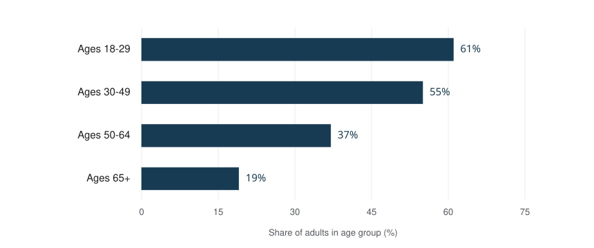
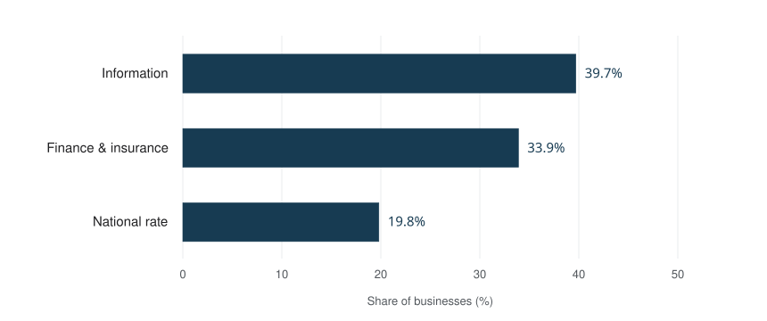
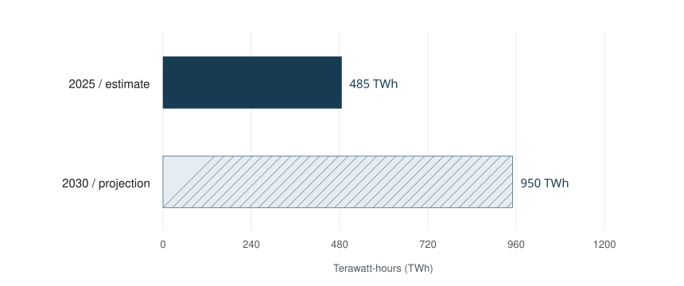

Artificial intelligence (AI) is the field of building computer systems that perform tasks such as recognizing patterns, interpreting language, making predictions and generating content. An AI system processes inputs to produce outputs in pursuit of an objective. It can use learned statistical patterns, explicitly represented knowledge, or a combination of approaches. AI does not have to look like a robot, speak like a person, or operate without human control. [1] [29]
A spam filter that identifies suspicious mail and a language model that drafts a reply are both AI applications, but they do different jobs. Machine learning explains how many models learn from examples; generative AI describes systems that produce content. Understanding those distinctions makes it easier to judge what a particular tool can do, what evidence supports its output, and where a person still needs to check it. [2]
Contents
- What does AI mean?
- How does artificial intelligence work?
- AI vs. machine learning vs. deep learning
- What is generative AI?
- Examples of AI in everyday life
- AI statistics: adoption, investment and research
- AI, productivity and the future of work
- AI agents, tools and automated workflows
- Narrow AI and artificial general intelligence
- Benefits, limitations and responsible AI
- AI hardware, data centres and electricity
- A brief history of artificial intelligence
- How to start using AI thoughtfully
- Key AI terms and further reading
- Sources and notes
What does AI mean?
The letters AI stand for artificial intelligence. The term can refer to a research field, a collection of computational methods, or a system built with those methods. A useful description of a real system names its input, its objective and its output. The OECD definition emphasizes this relationship rather than requiring a machine to imitate every aspect of human intelligence. [1]
For example, an image-inspection system might receive a photograph of a manufactured part and return a defect score. A planning system might receive a set of constraints and propose a sequence of actions. A writing application might receive instructions and source material and produce a draft. The user-facing product may combine several models, ordinary software, databases and review steps. [29]
AI, algorithms and ordinary automation
An algorithm is a procedure for performing a task. A trained AI model is a component used to map inputs to outputs; training algorithms help produce it. An application wraps that component in an interface, data access and business rules. These are related ideas, but the words are not interchangeable. [3] [12]
Consider three versions of a help desk. A fixed rule can send every message containing an order number to a queue. A learned classifier can estimate which queue fits a message, even when wording varies. A generative assistant can draft an answer after consulting the relevant policy. The first task may need only ordinary automation; the latter designs introduce different learning, evaluation and control problems. This is an illustrative comparison, not a test of a named product.
Symbolic AI and expert systems
AI also includes approaches that represent knowledge and apply rules or logical reasoning. Expert systems are a historical example: developers encode specialist knowledge so software can draw conclusions within a defined domain. Machine learning became especially prominent as data and computing resources expanded, but it did not erase the broader field. Modern systems may combine learned components with explicit rules and search. [27] [29]
How does artificial intelligence work?
Many modern AI systems follow a practical cycle: define a task, prepare data, train or select a model, evaluate it, and deploy it with monitoring. Different architectures implement that cycle differently. A prebuilt model can also be used without the application developer training a new one from scratch. [3]
Training data, datasets and model parameters
Training data are examples used to fit a model. A dataset is an organized collection of such examples or other records. In supervised learning, input information is associated with a known target. The input attributes are often called features; the target is a label. Training adjusts model parameters, also called weights in neural networks, to improve an objective on those examples. [3] [4]
A dataset is a design choice. Who supplied its records, which cases are missing, how labels were assigned and whether the examples resemble future use all affect what an evaluation can tell us. A large collection of repetitive or unrepresentative examples is not automatically a good basis for the task. A useful project begins by stating what success means for the people who will use the output. [9] [28]
- 01 · Prepare Collect examples and define the task.
- 02 · Train Adjust the model using training data.
- 03 · Evaluate Check separate examples and failure cases.
- 04 · Infer Use the model on a new input.
Original explanatory diagram. Some applications use an already-trained model and begin at evaluation.
Training, evaluation and inference
Training changes a model through a learning process. Inference uses a model to produce an output from an input. Evaluation checks whether those outputs meet the task requirements. A person sending a prompt to a chatbot is normally requesting inference; that act is not the same as updating the model’s weights. What a service stores or later uses for training is a separate product and data-policy question. [3] [5] [8]
Generalization means performing usefully on examples beyond those used to fit the model. Overfitting happens when a model fits training details so closely that its performance does not carry over adequately. Separate training and test data help expose this problem. A test should also include unusual but important cases, rather than only inputs that make the system look successful. [9]
Worked example: routing a support message
| Stage | Illustrative help-desk task |
|---|---|
| Objective | Route incoming requests to billing or technical support. |
| Training examples | Earlier messages paired with a human-assigned category. |
| New input | “I was charged twice after restarting the app.” |
| Possible output | A billing label, or scores for the available categories. |
| Human review | A mixed billing-and-technical request may need clarification rather than automatic routing. |
| Evaluation | Check correct routing, missed urgent cases and how often staff must override the result. |
This example contains no claimed accuracy rate. It illustrates why a convincing demonstration is different from a measured deployment. A useful test would define the messages included, the correct categories, the review process and the cost of mistakes before comparing outcomes. A fast answer is only helpful if it satisfies the actual task.
AI vs. machine learning vs. deep learning
Machine learning (ML) is a family of AI methods that learns model behavior from data. Deep learning uses neural networks with multiple layers. A neural network combines connected computational units to learn relationships, including nonlinear ones. The terminology describes mathematical systems; it should not be taken to mean that a model is a complete replica of a human brain. [2] [4]
| Term | How it relates to the other terms | A useful example |
|---|---|---|
| Artificial intelligence | The broad field, including learning and knowledge-based methods. | Interpreting an input or proposing a plan. |
| Machine learning | Methods that learn model behavior from examples. | Learning to classify support requests. |
| Neural network | A model architecture used within machine learning. | Combining layers of learned transformations. |
| Deep learning | Machine learning with multilayer neural networks. | Learning useful patterns in images or language. |
| Generative AI | A category defined by producing content. | Drafting text or generating an image. |
| Large language model | A large language-focused model used in applications. | Generating or transforming text. |
These categories answer different questions. “Deep learning” describes a class of methods. “Generative” describes an output capability. A neural network may classify an image without generating one. A generative system may create audio or pictures rather than language. Avoid treating every term as the next box in one simple nested chain. [2] [4] [5]
Supervised, unsupervised and reinforcement learning
| Learning approach | Learning signal | Illustrative task |
|---|---|---|
| Supervised learning | Examples paired with target answers. | Map a request to an existing category. |
| Unsupervised learning | Patterns in data without those target labels. | Group similar support messages to explore recurring issues. |
| Self-supervised learning | Targets constructed from the data itself. | Predict withheld or subsequent parts of a text sequence. |
| Reinforcement learning | Feedback or rewards associated with actions. | Improve an action policy in a defined environment. |
A project may combine learning approaches at different stages. A language model can undergo broad pretraining and then additional training to improve how it follows instructions. The training signal, task and evaluation procedure are more informative than assuming one label explains the whole system. [2] [5] [8] [12]
What is generative AI?
Generative AI produces content such as text, images, audio, video or code from learned patterns and supplied context. It can support drafting, transformation and synthesis. Producing a plausible output, however, is not the same as demonstrating that every statement is true or that the result is appropriate for a particular use. [2] [11]
Large language models, tokens and Transformers
A large language model (LLM) works with sequences of tokens: units that can represent words, word fragments or other symbols. Many widely used language models generate text by repeatedly estimating which token should come next, conditioned on the available context. A context window limits how much information a model can consider in a request; it is different from all the material encountered during training. [5]
The Transformer architecture introduced in the 2017 paper Attention Is All You Need made attention central to processing sequences. Attention lets a model weight relationships among positions in its input. The historical architecture is important to language modeling, but an architecture name alone does not establish a system’s reliability on a specific task. [6]
A chatbot is an application or conversational interface. It may use an LLM, retrieval, safety controls and other software. A foundation model is trained broadly enough to be adapted to a range of downstream tasks. Multimodal AI handles more than one kind of input or output, such as text together with images. None of these labels means that every product offers identical capabilities. [5] [12]
Prompts, fine-tuning and retrieval-augmented generation
| Technique | What changes | Example |
|---|---|---|
| Prompting | Instructions or context supplied for a request. | Ask for a summary in three bullets using an attached passage. |
| Fine-tuning | Model parameters through additional training. | Adapt a model using examples of a desired task or response style. |
| Retrieval-augmented generation (RAG) | The information retrieved and supplied to a generation step. | Retrieve a relevant policy passage before drafting an answer. |
RAG connects retrieval with generation: a system finds information, supplies it as context and generates an answer. Retrieval does not, by itself, update model weights. It can help connect a response to outside documents, but a system can still retrieve the wrong material, overlook a qualification or produce a statement the material does not support. [7]
For a fictional warranty assistant, the useful question is not simply “Does it use AI?” Ask which warranty edition it retrieves, whether it distinguishes purchase dates, and whether a reviewer can trace the answer to the applicable clause. A well-written prompt can clarify the task, but it cannot supply facts that neither the model nor its connected sources reliably provides. [8] [11]
Examples of AI in everyday life
AI often appears as a feature inside an ordinary service. The output may be a ranking, a transcript, an alert or a recommendation rather than a conversation. The following examples describe task categories; they are not claims that any named product is accurate under every condition. [2] [29]
| Application | Input and output | What to check |
|---|---|---|
| Spam filtering | Message information → unwanted-mail label or score. | Legitimate messages can be misclassified. |
| Speech recognition | Recorded or live speech → a transcript. | Noise, accents and specialized vocabulary. |
| Computer vision | Image or video → detected objects, regions or patterns. | Lighting, perspective and unfamiliar conditions. |
| Recommendation system | User and item signals → ranked suggestions. | Whether suggestions are useful beyond familiar past choices. |
| Fraud detection | Transaction patterns → an alert or risk score. | An anomaly is a reason to investigate, not proof of wrongdoing. |
| Prediction and regression | Relevant records → an estimated numerical value. | The time period, uncertainty and conditions of the estimate. |
| Generative writing | Prompt and context → a draft or transformation. | Facts, source fidelity and whether the output fits the request. |
| Robotics | Sensors and a task → a plan or physical action. | Operating limits, feedback and safe human intervention. |
Natural language processing and speech recognition
Natural language processing (NLP) covers computational work with human language. Classification, translation, information extraction and text generation are different language tasks. Speech recognition converts an audio signal into text; speech synthesis produces speech. A voice assistant may combine these capabilities with a language model and a separate system for carrying out actions. [12] [16]
Computer vision and image recognition
Computer vision deals with information in images and video. Image recognition may identify a category, while object detection also locates an item in an image. Visual generation is a different task: it creates content. A photograph that looks convincing therefore does not establish that a system can reliably identify objects, and successful object detection does not establish that a generated image is an authentic record. [12] [29]
Recommendations, prediction and decision support
Recommendation systems estimate relevance among alternatives. A prediction estimates an unknown outcome; a decision also depends on costs, constraints and responsibility. Those distinctions matter in design. For a fictional equipment-maintenance system, a risk score might trigger an inspection rather than automatically replace a part. The correct action depends on what an unnecessary repair costs and what a missed failure could cause.
AI in science: AlphaFold
The AlphaFold Protein Structure Database provides open access to over 200 million protein structure predictions. It is a concrete example of AI supporting scientific work beyond chatbots. Predicted structures are not the same as experimentally confirmed structures or approved treatments; scientists interpret their confidence and suitability for each research question. [21]
AI statistics: adoption, investment and research
The indicators below measure different things: people, businesses, investment, publications, infrastructure and modeled exposure. They should not be merged into a single “AI adoption rate.” Observation periods remain attached to the figures so an older measurement is not mistaken for a current live count.
Sources for these three indicators: Pew Research Center, U.S. Census Bureau and Eurostat. [14] [15] [16]
ChatGPT use among U.S. adults
Pew’s February 17-23, 2026 survey found that 44% of U.S. adults reported using ChatGPT. Use varied by age, from 61% among adults ages 18-29 to 19% among those 65 and older. These figures concern a named chatbot, not every background AI feature a person encounters. Pew changed its question wording in 2026, so earlier-year comparisons need that qualification. [15]

Ages 18-29: 61%; 30-49: 55%; 50-64: 37%; 65+: 19%. Pew Research Center [15]. The measure is reported use, not daily use.
Business adoption in the United States and European Union
For the BTOS collection period ending May 3, 2026, the Census Bureau reported a U.S. national business AI-use rate of 19.8%. Information-sector use was 39.7%, compared with 33.9% in Finance and Insurance. The question asks about the preceding two weeks. It was broadened in November 2025 to cover any business function, which limits simple comparisons with older versions. [14]

Information: 39.7%; Finance and Insurance: 33.9%; national rate: 19.8%. U.S. Census Bureau [14]. The national bar includes more sectors than those displayed.
Eurostat reported AI use by 20.0% of covered EU enterprises in 2025, compared with 13.5% in its 2024 measure. Its coverage includes specified business sectors and enterprises with at least 10 employees or self-employed persons. Written-language analysis was reported by 11.8%. The EU and U.S. figures use different populations and questionnaires; their proximity is not evidence of equal adoption. [16]
AI investment, patents and documented incidents
Stanford’s 2026 AI Index reports $285.9 billion in U.S. private AI investment and 1,953 newly funded U.S. AI companies for 2025. These are investment measures, not the value AI added to the economy. Its documented incident count rose from 233 in 2024 to 362 in 2025; a recorded-case count is affected by discovery and reporting as well as events. [13]
WIPO’s 2026 update identifies over 37,000 published GenAI patent families in 2025 and over 56,000 across 2024-2025. GenAI represented 8.7% of published AI patent families in 2025. A patent family groups related filings; these totals do not count distinct commercial products, prove technical quality or establish adoption. Publication lags also matter. [20]
Dated statistics register
| Measure | Value | Period / source | Interpretation |
|---|---|---|---|
| U.S. adults reporting ChatGPT use | 44% | Feb. 17-23, 2026 [15] | People; not daily use or all AI |
| ChatGPT use among U.S. adults ages 18-29 | 61% | Feb. 17-23, 2026 [15] | Age subgroup; same Pew survey |
| ChatGPT use among U.S. adults ages 30-49 | 55% | Feb. 17-23, 2026 [15] | Age subgroup; same Pew survey |
| ChatGPT use among U.S. adults ages 50-64 | 37% | Feb. 17-23, 2026 [15] | Age subgroup; same Pew survey |
| ChatGPT use among U.S. adults ages 65+ | 19% | Feb. 17-23, 2026 [15] | Age subgroup; same Pew survey |
| U.S. business AI use, national rate | 19.8% | BTOS period ending May 3, 2026 [14] | Past two weeks; any business function |
| U.S. Information-sector business AI use | 39.7% | BTOS period ending May 3, 2026 [14] | Sector estimate, not the national rate |
| U.S. Finance and Insurance business AI use | 33.9% | BTOS period ending May 3, 2026 [14] | Sector estimate; same survey period |
| EU enterprises using AI | 20.0% | 2025 [16] | Covered sectors; at least 10 employees or self-employed persons |
| EU enterprises using AI | 13.5% | 2024 comparison reported in 2025 release [16] | Questionnaire coverage changed for one technology category |
| EU enterprises using AI to analyze written language | 11.8% | 2025 [16] | A use category, not a mutually exclusive share |
| Global employment in occupations with some GenAI exposure | 25% | ILO/NASK 2025 analysis [17] | Modeled exposure; not jobs eliminated |
| High-income-country employment with some GenAI exposure | 34% | ILO/NASK 2025 analysis [17] | Modeled exposure using occupational tasks |
| Average productivity increase in a customer-support study | 15% | Final study published 2025 [18] | Issues resolved per hour in this setting |
| Customer-support agents in that study | 5,172 | Final study published 2025 [18] | Study sample; not a population-wide result |
| U.S. private AI investment | $285.9 billion | 2025; Stanford AI Index 2026 [13] | Private investment, not total national AI spending |
| Newly funded U.S. AI companies | 1,953 | 2025; Stanford AI Index 2026 [13] | Funding activity, not all AI businesses |
| Documented AI incidents | 362 | 2025; Stanford AI Index 2026 [13] | Recorded cases; not a complete census of harms |
| Documented AI incidents | 233 | 2024 comparison in Stanford AI Index 2026 [13] | Reporting and visibility can change the count |
| Global data-centre electricity demand | 485 TWh | 2025 estimate; IEA 2026 [19] | All data centres, not AI alone |
| Global data-centre electricity demand | 950 TWh | 2030 projection; IEA 2026 [19] | Forecast, not an observed result |
| Projected data-centre share of global electricity demand | About 3% | 2030 projection; IEA 2026 [19] | All data centres; projection assumptions apply |
| GenAI patent families published | Over 37,000 | 2025; WIPO 2026 update [20] | Published families, not individual patents or products |
| New GenAI patent families published | Over 56,000 | 2024 and 2025 combined; WIPO 2026 update [20] | Two-year total; not an annual count |
| GenAI share of published AI patent families | 8.7% | 2025; WIPO 2026 update [20] | Share within WIPO’s AI patent classification |
| Protein structure predictions in AlphaFold DB | Over 200 million | Database accessed Sept. 30, 2026 [21] | Predictions, not experimental confirmations |
For the underlying sources, use the numbered notes in the footer. The Resources page explains how to read surveys, forecasts and study results.
AI, productivity and the future of work
What a productivity study can establish
The final published version of Generative AI at Work studied 5,172 customer-support agents. Access to an AI assistant increased issues resolved per hour by 15% on average in that setting, with results varying across workers. This is evidence about a particular deployment, task and population, not a universal gain that can be applied to every occupation. [18]
When assessing a tool in a new workplace, an informative comparison records both time and quality. A draft produced faster may still need review. A support reply may be fluent but fail to resolve the issue. A useful evaluation counts rework, errors and escalations alongside output volume. The same question applies to learning: finishing an exercise faster does not by itself show that the learner understands more.
Job exposure is different from job loss
The ILO and NASK estimated in 2025 that 25% of global employment falls in occupations with some exposure to generative AI; the share was 34% in high-income countries. Their framework examines tasks and possible technological exposure. It does not mean that one-quarter of workers have lost their jobs or that every exposed task will be automated. [17]
A job combines activities, relationships, judgment and accountability. Technology may alter one component while leaving others in human hands. For example, drafting a first response and taking responsibility for a difficult customer problem are different activities. Adoption costs, workplace organization and choices about human review influence how the capability is actually used.
AI agents, tools and automated workflows
An AI agent is commonly used to describe a system that can choose steps and use tools in pursuit of a goal. Terminology varies. Anthropic draws a practical distinction between workflows with predefined steps and agents whose models decide more dynamically how to proceed. An application can combine both patterns. [10]
| Component | Role in an illustrative research assistant |
|---|---|
| Goal | Prepare a sourced comparison of three publicly described products. |
| Model | Interpret the request and propose the next step. |
| Tools | Search, retrieve a document or run a permitted calculation. |
| Context | The instructions, gathered evidence and intermediate results. |
| Control limits | Restrict accessible tools, actions and expenditure. |
| Human oversight | Review the evidence and approve consequential actions. |
Tool use extends what an application can do; it also creates additional ways to fail. A model may choose an unsuitable source, misread a tool result or act on an incorrect assumption. A bounded design makes important decisions inspectable and provides a way to stop, correct or escalate the task. Autonomy is a design choice, not proof of general intelligence. [10] [11]
Narrow AI and artificial general intelligence
Narrow AI describes capabilities focused on particular tasks or contexts. Artificial general intelligence (AGI) refers to broader capability across tasks, but definitions and proposed tests differ. A page explaining AI should distinguish a demonstrated ability from a claim about a future system, rather than treating a product label or impressive example as a settled test of general intelligence. [29]
A model might answer difficult questions yet fail on an unfamiliar instruction or simple-looking visual problem. The sensible comparison is task-specific: what was tested, under what conditions, with which tools and how reliably? Neither a human-like conversation nor a high score on one benchmark is, by itself, a complete account of intelligence. This reference does not assign a predicted arrival date to AGI.
Benefits, limitations and responsible AI
AI can help people search, organize, summarize, generate alternatives and identify patterns. The quality of the result depends on the system and the task. Responsible AI connects capability with evaluation, appropriate use and accountability. NIST’s AI Risk Management Framework treats trustworthiness as a set of considerations that must be addressed in context. [28]
| Potential benefit | Relevant failure mode | A practical check |
|---|---|---|
| Faster drafting | Invented claims or citations. | Verify factual details against the original source. |
| Processing many records | The same systematic mistake repeats at scale. | Inspect representative cases and important exceptions. |
| Pattern discovery | A spurious association is mistaken for a useful relationship. | Test new data and alternative explanations. |
| More accessible interfaces | Some languages or circumstances work less well. | Evaluate with the actual users and conditions. |
| Personalized support | Sensitive information is exposed or retained unexpectedly. | Understand data handling and limit unnecessary inputs. |
| Tool-assisted action | A wrong assumption causes an external action. | Set permissions and review points suited to the consequence. |
Hallucinations and confabulation
An AI hallucination is false or unsupported generated content presented as if it were valid. NIST uses the term confabulation. A fabricated reference is a clear example: the title and authors may look plausible even though the supposed document cannot be found. Fluent language is not a source-verification method. [11]
To check a generated explanation, separate the claim from its wording. Identify the original record, confirm that the record actually supports the statement, and preserve the date and scope. If the evidence is missing, describing the uncertainty is more useful than polishing the sentence. The statistics on this page follow that approach by retaining their populations and observation periods.
Bias, fairness and explainability
Bias can arise from data, labels, objectives, design and deployment conditions. Fairness requires attention to who receives benefits or bears errors. Explainability concerns making a system’s behavior understandable to relevant people. These are related but distinct: a readable explanation does not establish that a decision is correct or that performance is equitable. [11] [28]
In the fictional support-routing example, overall accuracy could hide poor routing for messages in one language. Reviewing that subgroup is more informative than a single average. The appropriate review also depends on the consequence: suggesting a reading list and determining an important real-world outcome should not be evaluated as if mistakes had identical costs.
Privacy, security and human oversight
Privacy concerns include which data are supplied, retained or exposed. Security concerns include attempts to misuse a system or manipulate its behavior. An agent that reads documents and uses tools needs controls on both the information it sees and the actions it can take. Human oversight is useful when a reviewer has the context, authority and time to intervene meaningfully. [11] [28]
Before using a tool for a sensitive task, identify the data it needs, the people or services that receive those data, and the review process for its output. After a mistake, record what happened and change the relevant design or workflow. Responsibility should remain explicit even when part of the work is automated.
AI hardware, data centres and electricity
AI depends on computing infrastructure. Large training and inference workloads use processors, memory, storage and networking; data centres also need power and cooling. Graphics processing units (GPUs) and other accelerators support many modern workloads. The electricity attributed to all data centres includes services other than AI, so the two categories must be kept separate. [19]
The IEA’s 2026 update estimates global data-centre electricity demand at 485 terawatt-hours (TWh) in 2025 and projects 950 TWh in 2030, about 3% of global electricity demand at that date. The second value is a projection. It depends on adoption, workload, efficiency and infrastructure assumptions; it is not a measurement of future consumption. [19]

2025 estimate: 485 TWh. 2030 projection: 950 TWh. IEA [19], CC BY 4.0; chart redrawn from reported values. The hatched bar is a projection, and both bars include non-AI services.
An energy comparison should specify the task and its boundaries. Training a model, generating a short text answer and creating a video are different workloads. A single universal “energy per AI query” figure would hide those differences. More efficient operations and growing demand can occur at the same time; either trend alone does not describe the total footprint. [19]
A brief history of artificial intelligence
AI developed through multiple research traditions: logic, search, knowledge representation, statistics and learning. The selected milestones below provide orientation. A game result, a new architecture and a public-use survey document different kinds of progress; they should not be treated as interchangeable evidence.
-
1950
Alan Turing and the imitation game
Turing published Computing Machinery and Intelligence, a foundational contribution to debate about machine intelligence. [22]
-
1956
The Dartmouth research project
John McCarthy helped organize the summer project associated with establishing artificial intelligence as a named field. The 1955 proposal and 1956 meeting are distinct events. [23]
-
1960s onward
Expert systems and represented knowledge
Systems such as DENDRAL explored the use of specialist knowledge. This strand of AI helps explain why the field is broader than today’s generative models. [27]
-
1997
Deep Blue and chess
IBM’s Deep Blue defeated world chess champion Garry Kasparov in a six-game match, a milestone in task-specific computer performance. [24]
-
2012
Deep neural networks and ImageNet
Krizhevsky, Sutskever and Hinton’s image-classification research became a prominent milestone in deep learning. [25]
-
2016
AlphaGo and Go
AlphaGo defeated Lee Sedol 4-1, combining learning and search in a challenging game domain. [26]
-
2017
The Transformer
Vaswani and colleagues introduced the architecture in Attention Is All You Need, a major contribution to sequence modeling. [6]
-
2020
Retrieval-augmented generation
Lewis and colleagues studied combining a generative model with retrieved information for knowledge-intensive language tasks. [7]
-
2025-2026
Adoption and infrastructure measurement
Surveys and statistical reports documented changing use, investment and resource demand. Their figures refer to different populations and periods. [13]
The History page explains how to interpret these milestones and records the publication history of this reference.
How to start using AI thoughtfully
Begin with a small task whose result you can independently check. For example, ask a tool to reorganize a short, non-sensitive passage you already understand. Define the output you want before running the task, and compare the answer against that definition afterward. The following exercise is an original learning activity, not a performance test of a particular system.
- Name the task. “Summarize the three delivery options in this passage” is easier to assess than “help with this document.”
- Supply suitable context. Give the relevant passage and identify which facts must remain unchanged.
- Set the format. Request a short table, a plain-language explanation or a list with a defined purpose.
- Ask for uncertainty to remain visible. Tell the system to flag missing information rather than invent it.
- Check the result. Compare every important claim with the input and an appropriate source.
- Decide whether it helped. Include review and correction time when judging usefulness.
Illustrative prompt
“Using only the passage below, compare the three delivery options in a table. Preserve every price and time period. If a detail is absent, write ‘not specified.’ Then list any ambiguity that needs a person’s decision.”
This exercise makes the input, transformation and checking process visible. It also reveals a useful limit: a well-formatted answer can still contain an error. Confidence in a workflow should come from repeated, relevant evaluation, not from how polished one output looks.
Key AI terms and further reading
These short definitions provide an index back to the explanations above. Terms are introduced in context rather than treated as a list of interchangeable buzzwords. Terminology was checked against the technical references cited in the relevant sections. [12]
- AI model
- A component that maps inputs to outputs within an AI system.
- Algorithm
- A procedure for performing a task; training algorithms help fit models.
- Classification
- Assigning an input to a category, often with a score or probability.
- Context
- Information available to a model for a particular request.
- Dataset
- An organized collection of examples or records.
- Deep learning
- Machine learning based on multilayer neural networks.
- Evaluation
- Testing whether a system meets defined requirements.
- Features and labels
- Input attributes and target answers in supervised learning.
- Fine-tuning
- Additional training that adjusts model parameters.
- Foundation model
- A broadly trained model that can be adapted to varied tasks.
- Generalization
- Useful performance on examples beyond the training data.
- Generative AI
- AI that produces content such as text, images or audio.
- Hallucination
- False or unsupported generated content; also called confabulation.
- Inference
- Using a model to produce an output from an input.
- Large language model
- A language-focused model used to process or generate text.
- Multimodal AI
- Systems that handle more than one type of data, such as text and images.
- Neural network
- A model built from connected computational units.
- Overfitting
- Fitting training details in a way that fails to generalize adequately.
- Parameters / weights
- Values adjusted during model training.
- Prompt
- Instructions and context supplied to a model.
- Regression
- Predicting a numerical value rather than assigning a category.
- Retrieval-augmented generation
- Combining retrieved information with a generation step.
- Token
- A unit used to represent text or other information in a model.
- Transformer
- An attention-based architecture introduced in 2017.
For learning materials, original papers and statistical publishers, continue to Resources. The source register below supplies plain-text URLs that can be copied into a browser.